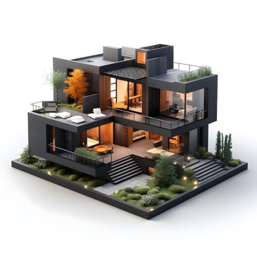

You will have everything nearby supermarket, buses, stations, cinemas, theaters, the carmen neighborhood,
etc.
YHA Snowdon Pen-y-Pass
Nestled at the foot of Mount Snowdon, the highest mountain in Wales, this hostel has a rich history tied
to mountaineering and the great outdoors. Originally built as a coach inn in the late 1800s, it served
travelers journeying through the rugged terrain of Snowdonia.
What makes Pen-y-Pass special is its role in outdoor culture. Over the decades, it became a base for
legendary climbers who tackled the Snowdon Horseshoe—a challenging circuit of ridges—and contributed to
the development of modern mountaineering in the UK.
Located in a beautifully preserved Victorian mansion built in 1885, the HI Sacramento Hostel offers a glimpse into the grandeur of California's past. Originally the home of a wealthy gold prospector, the mansion later became a boarding house and eventually a hostel. Its elegant architecture, complete with stained glass windows, carved wooden staircases, and period furnishings, makes it a unique blend of history and hospitality.
HI Sacramento Hostel (Sacramento, USA)
Clink78 Hostel (London, UK)
Once a courthouse in the heart of London, Clink78 Hostel is steeped in history. Built in the 19th century, the building was where Charles Dickens worked as a court reporter, inspiring elements of his famous novel Oliver Twist. In the 20th century, it served as a magistrates' court and famously hosted trials for punk bands like The Clash. Today, the hostel preserves its legal heritage—guests can stay in refurbished prison cells and relax in the courtroom-turned-lounge.